▶ 星空へ
≡ ギャラリー
閉じる
てのひら星座工房
Stage 1: 星座を描く
Stage 1.5: 練習
Stage 2: 絵を描く
Stage 3: 星空ギャラリー
片手を前へ伸ばし、開いたり閉じたりしてみましょう。
手を開き続けると、銀河の中へ進んで、ゲームがスタートします。
星座が完成しました
あなたの描いた星座は、いま星空でやさしく輝いています。
  
画筆
消しゴム
戻る
中央のプログレスバーを長押ししてください
描き終わったら、両手でそっと押し返すようにすると、星座が星空の奥へと飛んでいきます。
もう一度スワイプするとタイトルの空にもどります
 
 
